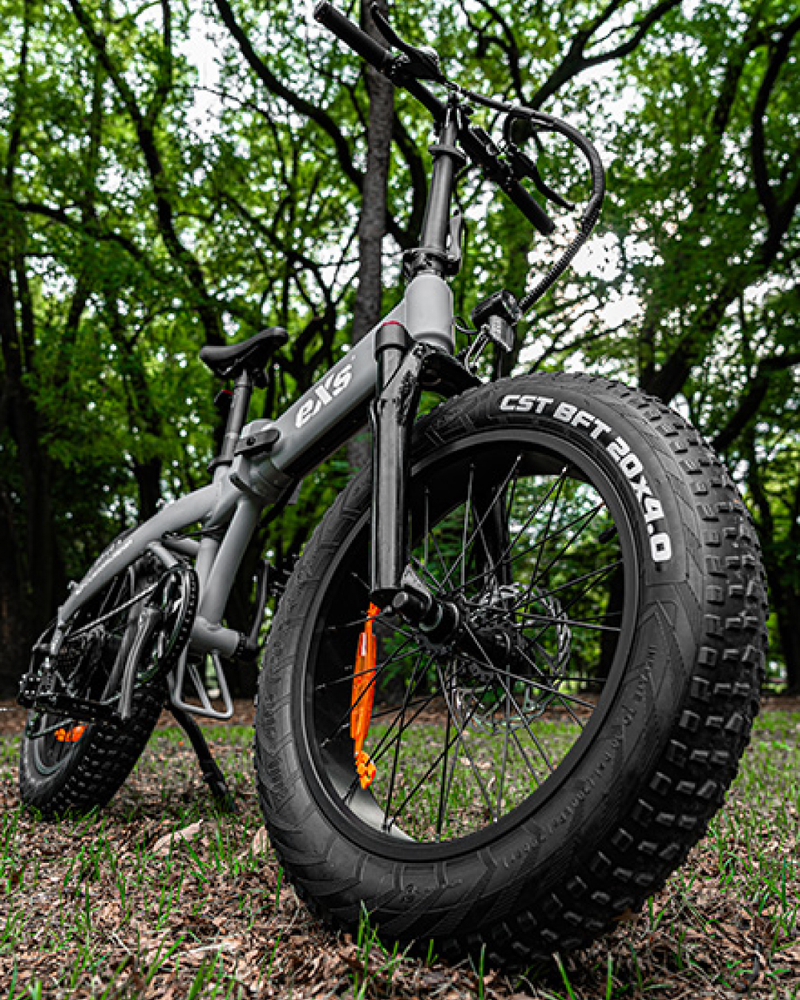
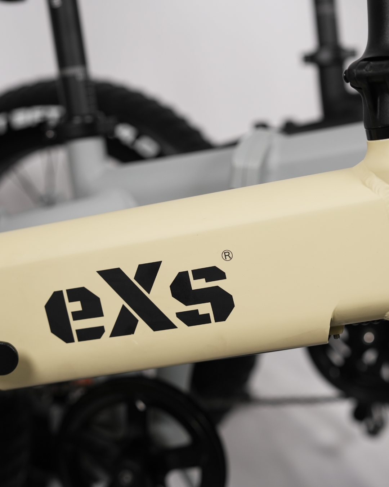
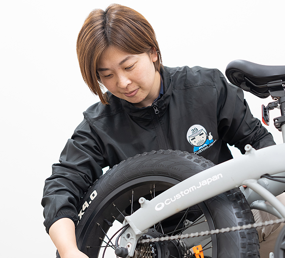

「買う理由」が「使い続ける理由」に変わる設計。
私たちが開発で見ているのは、購入時のインパクトだけではありません。購入後の通勤、買い物、週末移動まで、 実際に使うシーンでストレスが減るかを最初に評価します。メーカーとして、性能の前に体験品質を保証する。 それがeXsの設計思想です。
「高性能」より先に、「毎日使える安心感」を作る。それが開発の順番です。

Chapter 01
日常で“怖くない”ことを、スペックより優先しています
路面の継ぎ目、雨上がり、減速から停止まで。購入後に不安が出るポイントを想定し、 車体バランスとブレーキ特性を先に固めます。カタログでは見えにくい部分ですが、 ここが長く乗れるかどうかの分岐点です。
Chapter 02
ファットバイクeBikeは、見た目ではなく“安定の体感”のため
ファットタイヤは段差や荒れた舗装で挙動が穏やかになり、ハンドルの取られ感を抑えます。 電動アシストも急な押し出しを避け、漕ぎ出しから自然につながる制御に調整。 初めてでも扱いやすく、結果的に使用頻度が上がる設計です。


MANUFACTURER COMMENT
「購入時の期待値と、購入後の実体験を一致させることを最重要KPIにしています。 見た目・性能・価格だけでなく、使い続ける安心まで含めてプロダクトとして完成させます。」

PROFILE
北浦 真由美 / Product Development
eXsの次世代モビリティ開発を統括。電動アシスト自転車・ファットバイクeBike・電動キックボード領域で、 商品企画、品質管理、市場導入を一貫して担当。メーカー視点で「購入後の満足が続く設計」を追求している。